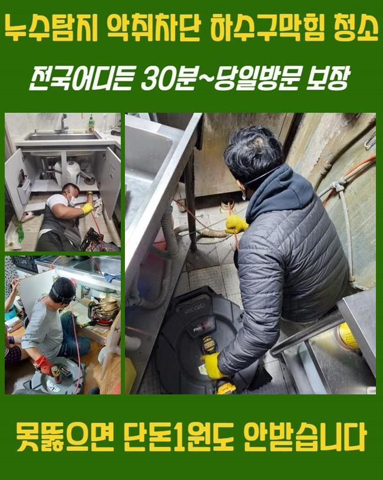
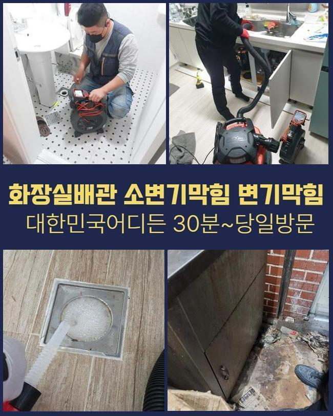
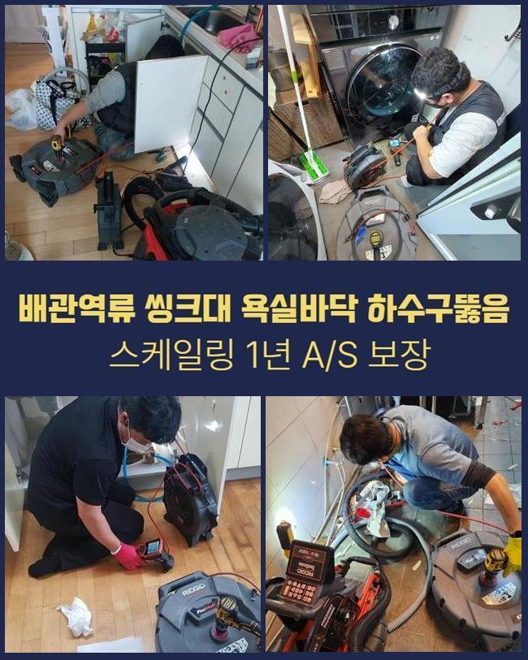
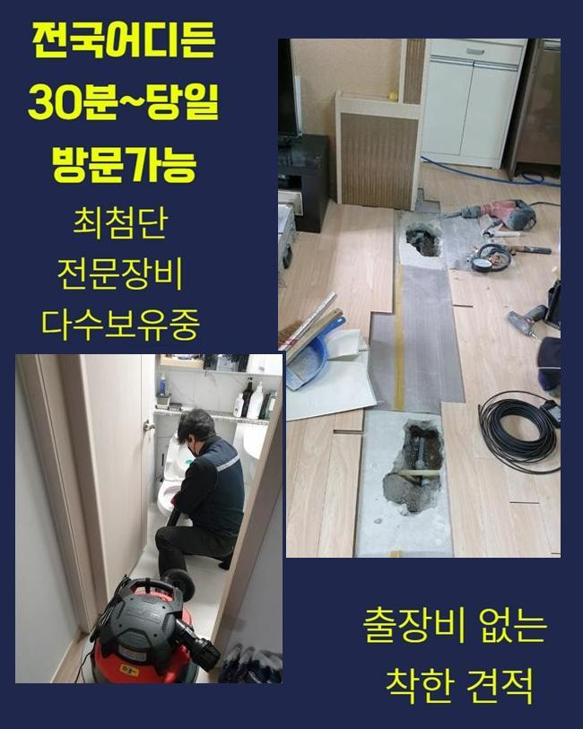
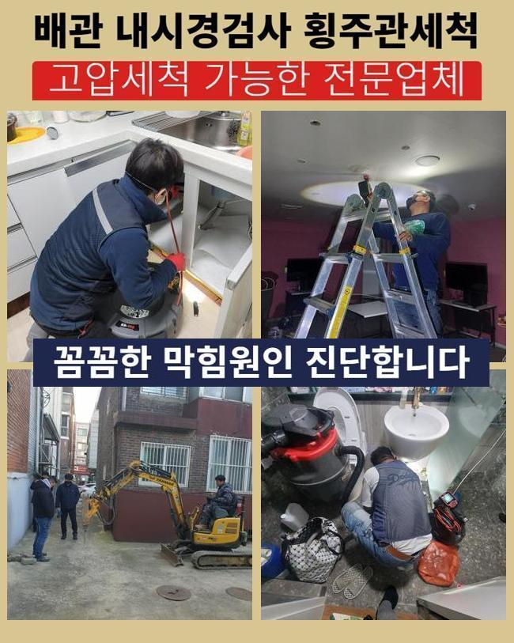
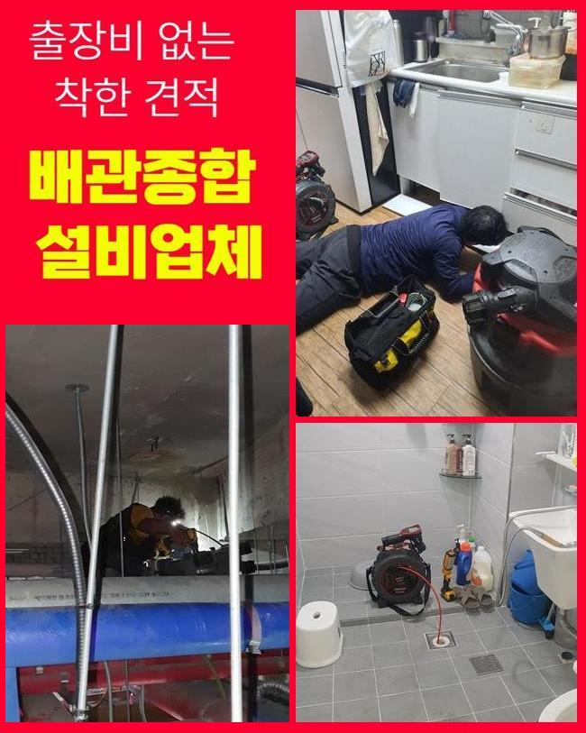
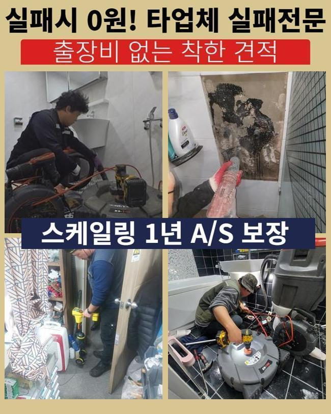

🏠 미추홀구 용현동세탁기배수구막힘 문학동 고압세척비용 설비출장
인천 미추홀구 하수구막힘 전문 시공 후기

📋 작업 개요
- 위치: 인천 미추홀구, 미추홀구, 인천
- 서비스 유형: 하수구막힘, 배관막힘, 역류해결, 배관청소, 고압세척, 설비공사
- 작업 일시: 2024. 11. 22. 9:53
- 업체명: 하수구수사대 (010-5615-2118)
🔍 문제 상황
미추홀구 용현동세탁기배수구막힘 문학동 고압세척비용 설비출장
일상생활 속에서 하수설비가 망가졌다면 어떤 해결방법으로 해결해야 할까요
흔히들 배수구가 막힌 상황에서 혼자 힘으로 오염물질을 빼보거나 인터넷에서 구매한 약품들을 사용하기도 합니다
이런 방법과 약제들은 막힌 배관을 수리하기에 부적합해요
이렇게 뾰족하게 생긴 물건들로 하수라인에 속을 긁어파내면 배수라인에 충격이 누적되어 배관이 망가지게 되며 새로운 배수관으로 공사해야하는 상황까지 생기게 됩니다
더군다나 독한 약제는 막혀있는 하수구를 해결하는데 큰도움이 되지 못할뿐더러 지속적으로 쓰다보면 하수관 내벽이 녹아내려 새로운 설비로 바꿔야 할 수도 있어요
약품들을 사용하실 때에는 매우 조심하셔야해요
이번에 도움을 요청하신 의뢰인도 계속적인 약품의 이용으로 배수라인의 안쪽면이 녹으면서 머리가 아플 정도의 악취때문에 힘드시다고 말씀하셨습니다
마트에서 살 수 있는 약물은 전문적인게 아니여서 정확한 문제부위를 해결하는 것이 어렵고 제대로된 약물에 대한 이해력이나 전문기술이 없다면 막힘이 해결될 것이라고 기대하기 어려워요
약을 사용하면 잠깐 물이 내려가며 조금 나아진듯 하나 배수관에 지속적인 손상때문에 더욱 커다란 문제점이 일어날 수도 있습니다

🔎 원인 분석
💡 전문가 진단: 정밀 진단 장비를 사용하여 슬러지의 고착 여부를 판명하고 타격/세척 작업을 실시했습니다.
이런 약물로는 석회질같이 코팅 된 불순물을 처리하는게 쉽지 않습니다
약품등으로 해결 할 수 없다면 배수구가 막히거나 역류하는 경우에 해결하는 방법은 무엇일까요
배수구가 막힌 경우에 어떻게 대처해야 하는지 꼼꼼하게 안내 해드릴게요
배수관이 막혀서 역류하고 있다는 다급한 연락에 신속정확하게 현장에 방문했습니다
막힘문제를 방치하게 되면 이어진 문제점으로 발전하게 되고 고약한 냄새가 생길 수도 있기때문에 이상이 느껴지시면 빠르게 전문가에게 도움을 요청하는게 가장 좋습니다
도착하자마자 하수관의 역류상황을 자세히 진단 해보았습니다
화장실 배수구를 점검했으나 입구를 보는 것만으로는 자세한 진단이 불가능하여 하수라인의 안쪽을 들여다봐야 했어요
본격적으로 작업을 진행하기위해 배수구 내시경기계를 이용했어요
내시경장치로 수월하게 배수관의 내부 상황을 모니터로 알아낼수 있으며 현재 문제에 맞는 방법을 찾아내서 신속하게 진행합니다
내시경선을 하수구를 통해 투입하고 내부를 보면서 막힘을 유발하는 이유들과 배관의 내부상태를 점검했습니다

🔧 작업 과정
카메라를 확인해보니 석회를 포함한 이물질이 하수관을 막아버려서 물길이 막힌 상태였어요
의뢰인분께 석회가루가 섞인 침전물이 하수라인에 가득하다고 설명 드렸고 이물질을 제거를 위해 진행하는 방법을 설명드렸어요
딱딱한 석회덩어리를 없애고자 스케일링 작업과정을 시작했어요
스케일링과정은 석회질을 제거하는 방법으로 하수라인의 안쪽을 세정하는 과정입니다
플렉스샤프트기를 사용하여 기기의 체인이 하수라인의 직경에 맞게 조절되며 침전물을 작게 깨뜨려 내보면서 배수관을 완벽하게 수리할 수 있었습니다
이런 석회의 원인으로는 목욕을 하면서 발생되는 이물질들이 모여서 굳은 현상입니다 세월이 지나며 조금씩 쌓이다가 하수관을 막히게 하는 이유가 돼요
스케일링작업들은 내시경장비를 투입해 전체적인 구간을 확실하게 작업해요
배수구의 막힌 문제가 심각한 부위를 장시간 집중적으로 작업해서 막힘상황을 해결 할 수 있었어요
작업을 하는 중간에도 배수관 내부를 체크하며 석회질이 점진적으로 제거되는걸 확인 할 수 있었습니다
배수관에 소량씩 남아있는 불순물까지 깨끗하게 청소했습니다
소량이라도 침전물이 하수관에 남아있다면 또다시 문제를 일으킬 수 있기때문에 작은 부분도 놓치지 않고 작업을 진행합니다
파쇄한 침전물을 없애고자서 석션기를 이용했습니다
석션장비를 사용해 남아있던 침전물까지 전부 제거하고 배관의 내부면을 재검했어요
하수관이 완전하게 청소된걸 체크한 후 물을 가득 채운 후에 내려보내 이상이 없는지 최종점검을 했습니다
세면대에 가득하게 받은 하수도 별다른 문제점 없이 배수 되었으며 다량의 물이 내려가며 역류상황등의 일도 일어나지 않았어요
고객분께 자세하게 하수설비 이용에 도움이 되는 방법들을 안내하고 작업 현장을 빠짐없이 정리했습니다


✅ 작업 완료
저희 전문진이 깨끗하게 세척을 진행했으므로 이후에 배수라인을 이용하시면서 의뢰인께서도 오염물질을 분리하실 수 있도록 사용과 관리에 노력이 필요합니다
하수설비는 관경이 넓지 않아서 소량의 이물질도 막힘사고의 원인이 됩니다
이와 같은 사례처럼 사례자님께서도 난처하시다면 저희 전문진에게 지금 바로 연락주세요
내 일같은 마음으로 해결 해드리겠습니다




⚠️ 하수구 배관 막힘 예방 및 관리 가이드
- ✅ 머리카락, 비닐, 물티슈 등 물에 분해되지 않는 이물질은 하수구 유입을 절대 금지해 주세요.
- ✅ 하수구 거름망을 씌우고 모여진 이물질은 주기적으로 쓰레기통에 바로 비워주셔야 합니다.
- ✅ 배관 노후가 심할 경우 이물질이 더 쉽게 걸리므로 주기적인 배관 세척(고압세척 등)을 권장합니다.
- ✅ 작업 후 1년 이내 재발 시 하수구수사대에서 무상 A/S 보증 서비스를 제공합니다.
💡 핵심 정리
- 확실한 장비 작업(내시경 점검 및 샤프트 스케일링)으로 원인을 뿌리 뽑습니다.
- 작업 후 1년 이내에 동일한 부위 재발 시 100% 무상 A/S 서비스를 보장합니다.
- 서울 · 경기 · 인천 전 지역에 24시간 언제든 긴급 출동할 수 있도록 항시 대기 중입니다.
❓ 자주 묻는 질문 (FAQ)
🚨 인천 미추홀구 하수구막힘 문제로 고민이신가요?
정확한 원인 진단과 확실한 시공으로 재발 없는 해결을 약속드립니다.
24시간 긴급 출동 | 서울 · 경기 · 인천 전지역 | 1년 내 재발 시 무상 A/S